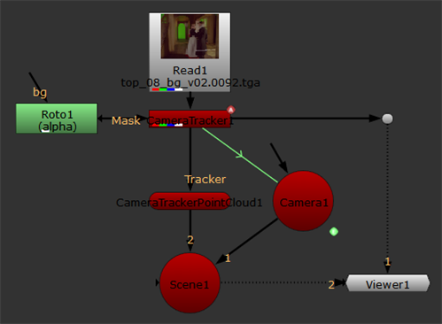
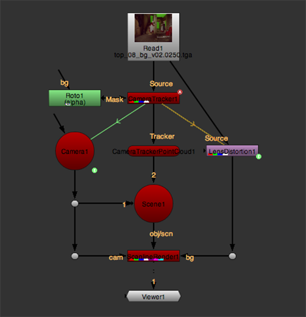

CameraTracker can create a ready-to-use 3D scene containing a point cloud, camera, and Scene node from the track and solve data. The Scene+ option adds LensDistortion and ScanlineRender nodes in addition to the standard scene nodes.
| 1. | Select Scene from the Export dropdown menu. |
| 2. | Enable or disable the Link output control to determine whether the scene's Camera node is expression linked or baked: |
• When enabled, CameraTracker creates an expression-linked camera so that any adjustments made in the properties panel's Output > Camera controls update the camera.
• When disabled, any adjustments made are ignored by the camera.
| 3. | Click Create. |
CameraTracker adds Camera, CameraTrackerPointCloud, and Scene nodes to the Node Graph. Expression linked cameras are linked to the CameraTracker node with a green expression arrow.

| 1. | Select Scene+ from the Export dropdown menu. |
| 2. | Enable or disable the Link output control to determine whether the scene's Camera node is expression linked or baked: |
• When enabled, CameraTracker creates an expression-linked camera so that any adjustments made in the properties panel's Output > Camera controls update the camera.
• When disabled, any adjustments made are ignored by the camera.
| 3. | Click Create. |
CameraTracker adds Camera, CameraTrackerPointCloud, Scene, ScanlineRender, and LensDistortion nodes to the Node Graph. The LensDistortion node is set to undistort the 2D footage in CameraTracker's Source input and use the result as the background for the 3D scene.
Expression-linked cameras are linked to the CameraTracker node with a green expression arrow.

|
|